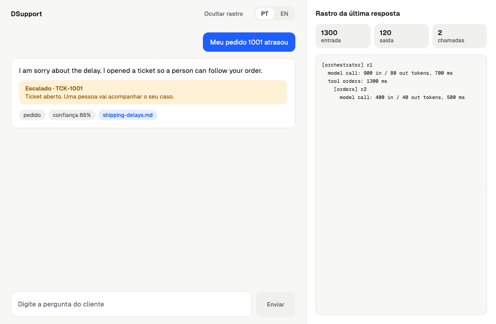
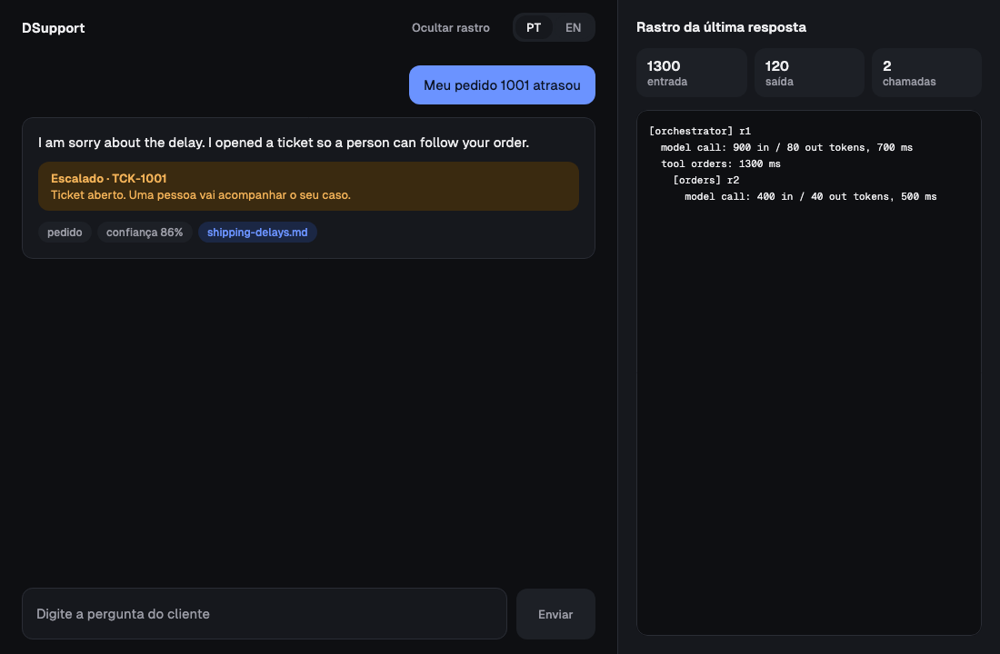
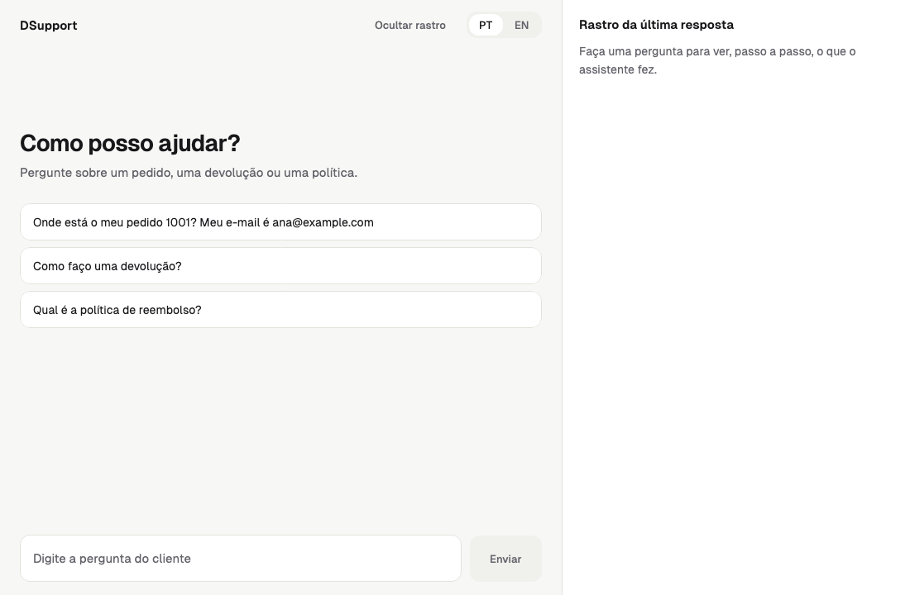

Multi-agent systems in practiceMultiagentes na prática
RAG, MCP, guardrails and evals, built from scratch in Kotlin and explained step by step.RAG, MCP, guardrails e evals, construídos do zero em Kotlin e explicados passo a passo.
A customer writes: "My order 1042 has not arrived. My email is ana@example.com". A naive assistant sends this to a model and prints the answer. The answer sounds right, but it may invent a delivery date, quote a policy that does not exist, or reveal data it should not. This article builds the assistant that does it properly, one concept at a time. Every stage is a git tag, and the concept names are the real ones used in the market.Um cliente escreve: "My order 1042 has not arrived. My email is ana@example.com". Um assistente ingênuo manda isso a um modelo e imprime a resposta. A resposta parece certa, mas pode inventar uma data de entrega, citar uma política que não existe ou revelar dados que não deveria. Este artigo constrói o assistente que faz isso direito, um conceito por vez. Cada etapa é uma tag do git, e os nomes dos conceitos são os reais usados no mercado.
Answers only from sourcesResponde só com fontesHands the case to a humanPassa o caso a um humanoNever invents a factNunca inventa um fatoMeasured by evalsMedido por evals
One real question, from start to endUma pergunta real, do começo ao fim
This is a real run against the API (stage 6): the customer says order 1042 has not arrived.Esta é uma execução real contra a API (etapa 6): o cliente diz que o pedido 1042 não chegou.
1
[orchestrator] started: My order 1042 has not arrived. My email is ana@example.com
The orchestrator receives the question.O orquestrador recebe a pergunta.
2
[orchestrator] calls orders {"task":"Check the status, tracking and delivery progress for order number 1042..."}
It does not look anything up itself: it delegates to the orders specialist with a complete task.Ele não consulta nada: delega ao especialista de pedidos com uma tarefa completa.
A delay triggers the escalation specialist, which opens a ticket.Um atraso aciona o especialista de escalonamento, que abre um ticket.
6
review round 1: rejected (4 problems)
The reviewer model rejected the first draft.O modelo revisor rejeitou o primeiro rascunho.
7
review round 2: approved
The revised draft passed.O rascunho revisado passou.
8
Total: 12 model calls, 14931 in / 2043 out tokens
Twelve model calls, about 0.25 cent with claude-haiku-5-5.Doze chamadas ao modelo, cerca de 0,25 centavo com claude-haiku-5-5.
1
Stage 1: Agent loopEtapa 1: Laço do agente (agent loop)
the model decides, your code actso modelo decide, o seu código age
The problemO problema
A language model only produces text. It cannot look up an order, open a ticket or read a file. If you send one question and take one answer, the model has to guess everything it does not know.Um modelo de linguagem só produz texto. Ele não consulta um pedido, não abre um ticket e não lê um arquivo. Se você manda uma pergunta e pega uma resposta, o modelo precisa adivinhar tudo o que não sabe.
Without itSem isso
One call. The model guesses the delivery date of order 1042 and sounds confident.Uma chamada. O modelo chuta a data de entrega do pedido 1042 e soa confiante.
With itCom isso
A loop. The model asks for the order status, your code runs it, the result goes back, and only then the model answers.Um laço. O modelo pede o status do pedido, o seu código executa, o resultado volta e só então o modelo responde.
ConceptConceito
Agent loop (agentic loop): the cycle that turns a model into an agent. The model decides the next step, your code executes it, the result is added to the conversation, and the cycle repeats until the model gives a final answer or a turn limit is reached.Agent loop (laço agêntico): o ciclo que transforma um modelo em agente. O modelo decide o próximo passo, o seu código executa, o resultado entra na conversa e o ciclo se repete até o modelo dar a resposta final ou o limite de turnos ser atingido.
How it flowsComo flui
QuestionPergunta
→
Model decidesModelo decide
→
Code runs the toolCódigo executa a ferramenta
→
Model reads the resultModelo lê o resultado
→
Final answerResposta final
Step by stepPasso a passo
The history starts with the customer question.O histórico começa com a pergunta do cliente.
The model replies with text or with a request to call a tool.O modelo responde com texto ou com um pedido para chamar uma ferramenta.
If it asked for a tool, the code runs it and appends the result to the history.Se pediu uma ferramenta, o código executa e acrescenta o resultado ao histórico.
Back to step 2, at most maxTurns times, so the loop can never run forever.Volta ao passo 2, no máximo maxTurns vezes, então o laço nunca roda para sempre.
AnalogyAnalogia
A manager who only gives orders and an assistant who does the work.Um gerente que só dá ordens e um assistente que faz o trabalho.
Common mistakeErro comum
Letting the loop run without a limit. A confused model can call tools forever and burn money.Deixar o laço rodar sem limite. Um modelo confuso pode chamar ferramentas para sempre e queimar dinheiro.
Real code from the repositoryCódigo real do repositórioetapa-1
/** The contract the model reads to decide: name, description and the JSON Schema of the input. */
data class ToolSpec(
val name: String,
val description: String,
val inputSchema: JsonObject,
val readOnly: Boolean = true,
val destructive: Boolean = false,
)
data class ToolResult(val content: String, val isError: Boolean = false)
/** A capability of the agent, local or remote (MCP). The agent cannot tell the difference. */
interface Tool {
val spec: ToolSpec
suspend fun run(args: JsonObject): ToolResult
}
/** Where tools come from: a local list, an MCP server, and so on. */
interface ToolProvider {
suspend fun tools(): List<Tool>
git checkout etapa-1
2
Stage 2: LLM client (Large Language Model)Etapa 2: Cliente de LLM (Large Language Model)
one port, one adapter per provideruma porta, um adapter por provedor
The problemO problema
If the agent code calls one provider directly, switching provider means rewriting the agent. The market changes every few months.Se o código do agente chama um provedor diretamente, trocar de provedor significa reescrever o agente. O mercado muda a cada poucos meses.
Without itSem isso
Provider details (JSON shapes, retries, error codes) leak into the agent logic.Detalhes do provedor (formatos JSON, tentativas, códigos de erro) vazam para a lógica do agente.
With itCom isso
The agent only knows a port (LlmClient). One adapter translates to Anthropic; another could translate to any other model.O agente só conhece uma porta (LlmClient). Um adapter traduz para a Anthropic; outro poderia traduzir para qualquer outro modelo.
ConceptConceito
Port and adapter (hexagonal architecture): the core defines an interface it needs; an adapter at the edge implements it for a concrete technology.Porta e adapter (arquitetura hexagonal): o core define uma interface de que precisa; um adapter na borda a implementa para uma tecnologia concreta.
The core defines LlmClient with reply and structured methods.O core define o LlmClient com os métodos reply e structured.
The adapter maps neutral messages to the provider JSON, including tool calls and tool results.O adapter mapeia mensagens neutras para o JSON do provedor, incluindo chamadas e resultados de ferramentas.
429 and 5xx errors are retried twice; 400 and 401 fail at once, because retrying does not fix them.Erros 429 e 5xx são repetidos duas vezes; 400 e 401 falham logo, porque repetir não resolve.
A contract test suite (LlmClientContract) proves any adapter behaves the same.Uma suíte de teste de contrato (LlmClientContract) prova que qualquer adapter se comporta igual.
AnalogyAnalogia
A socket and a plug: swap the brain, keep the system.Uma tomada e um plugue: troque o cérebro, mantenha o sistema.
Common mistakeErro comum
Importing the provider SDK inside the core. The dependency should point inward, never outward.Importar o SDK do provedor dentro do core. A dependência deve apontar para dentro, nunca para fora.
Real code from the repositoryCódigo real do repositórioetapa-2
data class Usage(val inputTokens: Int, val outputTokens: Int)
data class LlmRequest(val system: String, val messages: List<Message>, val tools: List<ToolSpec>)
sealed interface LlmReply {
val usage: Usage
data class Text(val text: String, override val usage: Usage) : LlmReply
data class ToolCalls(val calls: List<ToolCall>, override val usage: Usage) : LlmReply
}
/** A structured answer plus what it cost, so the cost of structured calls is as visible as any other call. */
data class StructuredReply(val value: JsonObject, val usage: Usage)
/** A mandatory output format: name, description and the JSON Schema the answer must follow. */
data class OutputSchema(val name: String, val description: String, val schema: JsonObject)
/** The only thing the core knows about a language model. Each provider is an adapter. */
interface LlmClient {
suspend fun next(request: LlmRequest): LlmReply
suspend fun structured(request: LlmRequest, schema: OutputSchema): StructuredReply
}
git checkout etapa-2
3
Stage 3: Tools (tool use, function calling)Etapa 3: Ferramentas (tool use, function calling)
functions the model can ask the code to runfunções que o modelo pode pedir ao código
The problemO problema
The model needs real data: the status of an order, a tracking code, a way to open a ticket.O modelo precisa de dados reais: o status de um pedido, um código de rastreio, uma forma de abrir um ticket.
Without itSem isso
The model says "your order should arrive tomorrow" without checking anything.O modelo diz "seu pedido deve chegar amanhã" sem conferir nada.
With itCom isso
The model calls get_order_status with the order number and email, and answers from the result.O modelo chama get_order_status com o número do pedido e o e-mail, e responde a partir do resultado.
ConceptConceito
Tool use (function calling): you describe a function with a name, a description and a JSON Schema. The model returns a request to call it; your code runs it.Tool use (function calling): você descreve uma função com nome, descrição e JSON Schema. O modelo devolve um pedido para chamá-la; o seu código a executa.
How it flowsComo flui
Asks get_order_statusPede get_order_status
→
Tool reads the dataFerramenta lê os dados
→
Result as JSONResultado em JSON
→
Model writes the answerModelo escreve a resposta
Step by stepPasso a passo
Each tool declares its name, description and input schema (ToolSpec).Cada ferramenta declara nome, descrição e esquema de entrada (ToolSpec).
get_order_status computes the delay from the estimated date; track_shipment returns carrier and tracking code; create_ticket opens a ticket.get_order_status calcula o atraso a partir da data estimada; track_shipment devolve transportadora e código; create_ticket abre um ticket.
A tool never throws: failures come back as an error result the model can read and react to.Uma ferramenta nunca lança exceção: a falha volta como resultado de erro que o modelo consegue ler e tratar.
The description is part of the prompt: a vague description makes the model pick the wrong tool.A descrição faz parte do prompt: uma descrição vaga faz o modelo escolher a ferramenta errada.
AnalogyAnalogia
Giving the assistant hands: look up an order, open a ticket.Dar mãos ao assistente: consultar um pedido, abrir um ticket.
Common mistakeErro comum
Returning huge or raw results. Return only what the model needs, already shaped.Devolver resultados enormes ou crus. Devolva só o que o modelo precisa, já no formato certo.
Real code from the repositoryCódigo real do repositórioetapa-3
class GetOrderStatusTool(
private val orders: OrderGateway,
private val today: () -> LocalDate = { Clock.System.now().toLocalDateTime(TimeZone.currentSystemDefault()).date },
) : Tool {
override val spec = ToolSpec(
name = "get_order_status",
description = "Looks up the status, delivery estimate and delay of an order. Use it when the customer asks " +
"whether an order arrived or is late. Requires order_id and the email used in the purchase.",
inputSchema = stringSchema("order_id", "email"),
)
override suspend fun run(args: JsonObject): ToolResult {
val orderId = args.stringArg("order_id") ?: return fail("missing_argument:order_id")
val email = args.stringArg("email") ?: return fail("missing_argument:email")
val order = orders.findOwned(orderId, email) ?: return fail("order_not_found_or_email_mismatch")
answering with a consultationresponder com consulta
The problemO problema
Policies live in documents (returns, refunds, shipping). A model that answers from memory invents rules that do not exist.As políticas vivem em documentos (devoluções, reembolsos, envios). Um modelo que responde de memória inventa regras que não existem.
Without itSem isso
"You have 90 days to return it" (invented)."Você tem 90 dias para devolver" (inventado).
With itCom isso
The assistant searches the help-center articles, finds the passage and answers citing its source.O assistente busca nos artigos da central de ajuda, acha o trecho e responde citando a fonte.
ConceptConceito
RAG (Retrieval-Augmented Generation): retrieve relevant passages first, then generate an answer grounded in them. Key pieces: chunking (splitting documents), embeddings (turning text into vectors) and a similarity search.RAG (Retrieval-Augmented Generation): recupere os trechos relevantes primeiro e depois gere a resposta fundamentada neles. Peças-chave: chunking (dividir documentos), embeddings (transformar texto em vetores) e busca por similaridade.
Search with relevance cut-offBusca com corte de relevância
→
Answer cites the sourceResposta cita a fonte
Step by stepPasso a passo
MarkdownChunker splits each article by section into passages.O MarkdownChunker divide cada artigo por seção em trechos.
TfIdfEmbedder turns passages into vectors with a simple word weighting (TF-IDF). A VoyageEmbedder is the optional semantic alternative.O TfIdfEmbedder transforma os trechos em vetores com um peso simples de palavras (TF-IDF). O VoyageEmbedder é a alternativa semântica opcional.
SearchKbTool finds the closest passages and drops anything under a relevance cut-off (0.25).O SearchKbTool acha os trechos mais próximos e descarta o que está abaixo de um corte de relevância (0,25).
The answer must cite the article; code later checks that the cited source was really returned.A resposta deve citar o artigo; o código depois confere que a fonte citada realmente foi devolvida.
AnalogyAnalogia
An exam where you may consult the manual.Uma prova em que se pode consultar o manual.
Common mistakeErro comum
No relevance cut-off: the search always returns something, and the model answers from an unrelated passage.Sem corte de relevância: a busca sempre devolve algo, e o modelo responde com base num trecho sem relação.
Real code from the repositoryCódigo real do repositórioetapa-4
class SearchKbTool(
private val kb: KnowledgeSearch,
private val minScore: Double = 0.25,
) : Tool {
override val spec = ToolSpec(
name = "search_kb",
description = "Searches the help center articles. Use it for questions about policies, deadlines, returns, " +
"refunds, shipping, payments, warranty, cancellation, privacy and the customer account.",
inputSchema = stringSchema("query"),
)
override suspend fun run(args: JsonObject): ToolResult {
val query = args.stringArg("query") ?: return fail("missing_argument:query")
val relevant = kb.search(query).filter { it.score >= minScore }
if (relevant.isEmpty()) return fail("nothing_relevant_found")
val results = relevant.map {
buildJsonObject {
put("doc_id", it.docId)
put("title", it.title)
put("snippet", it.snippet)
put("score", it.score)
tools served by separate programsferramentas servidas por programas separados
The problemO problema
Orders and tickets belong to systems with their own owner and release cycle. They should not be compiled into the agent.Pedidos e tickets pertencem a sistemas com dono e ciclo de versão próprios. Eles não devem ser compilados dentro do agente.
Without itSem isso
Every new tool means changing and redeploying the agent.Cada ferramenta nova exige mudar e reimplantar o agente.
With itCom isso
Tools run as separate MCP servers. Adding one is a line in a config file.As ferramentas rodam como servidores MCP separados. Adicionar uma é uma linha num arquivo de configuração.
ConceptConceito
MCP (Model Context Protocol): an open standard to connect tools and data to AI agents. Over stdio, the client starts the server as a child process and they exchange JSON-RPC messages: initialize, tools/list, tools/call.MCP (Model Context Protocol): um padrão aberto para conectar ferramentas e dados a agentes de IA. Sobre stdio, o cliente inicia o servidor como processo filho e eles trocam mensagens JSON-RPC: initialize, tools/list, tools/call.
How it flowsComo flui
AgentAgente
→
McpToolProviderMcpToolProvider
→
stdio (JSON-RPC)stdio (JSON-RPC)
→
mcp-orders / mcp-ticketsmcp-orders / mcp-tickets
Step by stepPasso a passo
McpToolServer wraps any list of tools as an MCP server using the official Kotlin SDK.O McpToolServer embrulha qualquer lista de ferramentas como servidor MCP usando o SDK oficial do Kotlin.
McpToolProvider connects once, lists the remote tools and exposes them as ordinary Tool objects.O McpToolProvider conecta uma vez, lista as ferramentas remotas e as expõe como objetos Tool comuns.
A timeout, a dead server or an exception becomes an error result. The agent never hangs.Um timeout, um servidor morto ou uma exceção viram resultado de erro. O agente nunca trava.
The agent code is identical to stage 4: it cannot tell a local tool from a remote one.O código do agente é idêntico ao da etapa 4: ele não distingue uma ferramenta local de uma remota.
AnalogyAnalogia
USB-C: any tool that speaks it plugs into any agent.USB-C: qualquer ferramenta que fale o protocolo liga em qualquer agente.
Common mistakeErro comum
Printing logs to stdout in a stdio server. Stdout is the protocol; a stray println corrupts the conversation.Imprimir logs em stdout num servidor stdio. A saída padrão é o protocolo; um println solto corrompe a conversa.
Real code from the repositoryCódigo real do repositórioetapa-5
/** A live conversation with one MCP server. Hides the SDK and the child process. */
interface McpConnection : AutoCloseable {
suspend fun listTools(): List<ToolSpec>
suspend fun callTool(name: String, args: JsonObject): ToolResult
}
a coordinator and specialists, in parallelum coordenador e especialistas, em paralelo
The problemO problema
One agent with every tool and every instruction gets confused: long prompts, too many tools, more chances to pick the wrong one.Um agente com todas as ferramentas e todas as instruções se confunde: prompts longos, ferramentas demais, mais chances de escolher a errada.
Without itSem isso
One giant prompt that mixes policies, orders and tickets.Um prompt gigante que mistura políticas, pedidos e tickets.
With itCom isso
An orchestrator delegates to three specialists, each with a short prompt and only its own tools.Um orquestrador delega a três especialistas, cada um com um prompt curto e só as suas ferramentas.
ConceptConceito
Multi-agent orchestration (orchestrator and sub-agents): a coordinator agent splits the work and delegates each part to a specialist agent, in parallel when possible.Orquestração multiagente (orquestrador e sub-agentes): um agente coordenador divide o trabalho e delega cada parte a um agente especialista, em paralelo quando possível.
How it flowsComo flui
OrchestratorOrquestrador
↓
knowledge (RAG)knowledge (RAG)
ordersorders
escalationescalation
Step by stepPasso a passo
Each specialist is exposed to the orchestrator as a tool (SubAgentTool).Cada especialista é exposto ao orquestrador como uma ferramenta (SubAgentTool).
A fresh agent is created per call, so histories never mix.Um agente novo é criado a cada chamada, então os históricos nunca se misturam.
config/agents.json is an allow-list: which tools each agent may use.config/agents.json é uma lista de permissão: quais ferramentas cada agente pode usar.
Several calls in one turn run in parallel (async and awaitAll) and keep their order.Várias chamadas no mesmo turno rodam em paralelo (async e awaitAll) e mantêm a ordem.
AnalogyAnalogia
A reception desk sending each question to the right expert.Uma recepção que manda cada pergunta ao especialista certo.
Common mistakeErro comum
Giving the orchestrator the data tools too. It then skips delegation and the design collapses.Dar ao orquestrador também as ferramentas de dados. Ele pula a delegação e o desenho desmorona.
Real code from the repositoryCódigo real do repositórioetapa-6
class SubAgentTool(
private val name: String,
description: String,
private val newAgent: () -> Agent,
) : Tool {
override val spec = ToolSpec(name, description, stringSchema("task"))
override suspend fun run(args: JsonObject): ToolResult {
val task = args.stringArg("task") ?: return fail("missing_argument:task")
return try {
ToolResult(newAgent().run(task))
} catch (e: CancellationException) {
throw e
} catch (e: Exception) {
ToolResult("error: specialist '$name' failed: ${e.message}", isError = true)
}
}
}
fun subAgentTool(name: String, description: String, newAgent: () -> Agent): Tool = SubAgentTool(name, description, newAgent)
rules the model can neither see nor skipregras que o modelo não vê nem pula
The problemO problema
A prompt is a suggestion. A model can ignore it, be tricked by the customer, or forget it. Some rules cannot depend on good behavior.Um prompt é uma sugestão. Um modelo pode ignorá-lo, ser enganado pelo cliente ou esquecê-lo. Algumas regras não podem depender de bom comportamento.
Without itSem isso
"Please never reveal other customers data" written in the prompt."Por favor nunca revele dados de outros clientes" escrito no prompt.
With itCom isso
Code checks the order number and email before any lookup. The model cannot skip it.O código confere o número do pedido e o e-mail antes de qualquer consulta. O modelo não consegue pular.
ConceptConceito
Guardrails (guards, hooks): deterministic code that runs at fixed points of the agent loop (before a tool, after a tool, before the final answer) and can allow, deny, modify or rewrite.Guardrails (guards, hooks): código determinístico que roda em pontos fixos do laço do agente (antes de uma ferramenta, depois dela, antes da resposta final) e pode permitir, negar, modificar ou reescrever.
How it flowsComo flui
Model asks a toolModelo pede uma ferramenta
→
beforeTool: allow, deny or modifybeforeTool: permitir, negar ou modificar
→
Tool runsFerramenta executa
→
afterTool: rewriteafterTool: reescrever
→
beforeFinal: rewritebeforeFinal: reescrever
Step by stepPasso a passo
IdentityGate denies an order lookup without a numeric order id and a valid email.IdentityGate nega consulta de pedido sem número válido e e-mail válido.
Redaction and RedactResults hide personal data in what the model sees and says.Redaction e RedactResults ocultam dados pessoais no que o modelo vê e diz.
TicketDedup collapses two parallel create_ticket calls into one ticket.TicketDedup junta duas chamadas create_ticket paralelas em um só ticket.
GuardPolicy refuses to assemble the system if a destructive tool has no guard.GuardPolicy se recusa a montar o sistema se uma ferramenta destrutiva não tiver guard.
AnalogyAnalogia
Safety rails around the model.Grades de proteção em volta do modelo.
Common mistakeErro comum
Putting a safety rule only in the prompt. If it matters, enforce it in code.Colocar uma regra de segurança só no prompt. Se importa, imponha no código.
What a denial looks like to the modelComo uma negação aparece para o modelo
Decision.Deny("email is missing or invalid. Ask the customer for the email used in the purchase.")
Real code from the repositoryCódigo real do repositórioetapa-7
interface Hook {
val name: String get() = this::class.simpleName.orEmpty()
val covers: Set<String> get() = emptySet()
suspend fun beforeTool(agent: String, tool: ToolSpec, args: JsonObject): Decision = Decision.Allow
suspend fun afterTool(agent: String, tool: ToolSpec, args: JsonObject, result: ToolResult): ToolResult = result
suspend fun beforeFinal(agent: String, history: List<Message>, text: String): String = text
}
git checkout etapa-7
8.1
Stage 8.1: Structured output and validationEtapa 8.1: Saída estruturada (structured output) e validação
the answer as a forma resposta como um formulário
The problemO problema
Free text is hard to check. Is the ticket number real? Is there a source? Is the model sure?Texto livre é difícil de conferir. O número do ticket é real? Há fonte? O modelo tem certeza?
Without itSem isso
A paragraph you can only read.Um parágrafo que você só consegue ler.
With itCom isso
A fixed JSON form: answer, intent, sources, confidence, escalated, ticket_id. Code validates each field.Um formulário JSON fixo: answer, intent, sources, confidence, escalated, ticket_id. O código valida cada campo.
ConceptConceito
Structured output: the model fills a JSON Schema instead of writing free text. Validation in code then checks the values, because a schema alone cannot say that a ticket id must exist.Saída estruturada: o modelo preenche um JSON Schema em vez de escrever texto livre. A validação em código confere os valores, porque só o esquema não diz que um id de ticket precisa existir.
How it flowsComo flui
Model fills the schemaModelo preenche o esquema
→
SupportAnswerSupportAnswer
→
Validator in codeValidador em código
→
Accepted or rejectedAceita ou rejeitada
Step by stepPasso a passo
The final answer uses output_config.format with a json_schema.A resposta final usa output_config.format com um json_schema.
SupportAnswerValidator rejects an invented ticket id, a source that no tool returned and an unknown intent.O SupportAnswerValidator rejeita um id de ticket inventado, uma fonte que nenhuma ferramenta devolveu e uma intenção desconhecida.
Confidence between 0 and 1 is checked in code, since the schema cannot express a range.A confiança entre 0 e 1 é conferida em código, já que o esquema não expressa intervalo.
A rejected answer goes back to the model with the list of problems.Uma resposta rejeitada volta ao modelo com a lista de problemas.
AnalogyAnalogia
An answer as a form instead of free text.Uma resposta como formulário em vez de texto livre.
Common mistakeErro comum
Trusting the schema alone. It guarantees the shape, not the truth.Confiar só no esquema. Ele garante o formato, não a verdade.
Real code from the repositoryCódigo real do repositórioetapa-8.1
data class SupportAnswer(
val answer: String = "",
val intent: String = "other",
val sources: List<String> = emptyList(),
val confidence: Double = 0.0,
val escalated: Boolean = false,
@SerialName("ticket_id") val ticketId: String? = null,
) {
companion object {
a second pair of eyes, with a limitum segundo par de olhos, com limite
The problemO problema
Even a valid form can contain a claim that no tool result supports.Mesmo um formulário válido pode conter uma afirmação que nenhum resultado de ferramenta sustenta.
Without itSem isso
The first draft goes straight to the customer.O primeiro rascunho vai direto para o cliente.
With itCom isso
A second model reviews the draft. Rejected drafts are revised, at most twice. Then a human takes over.Um segundo modelo revisa o rascunho. Rascunhos rejeitados são revisados, no máximo duas vezes. Depois um humano assume.
ConceptConceito
Producer–reviewer loop (LLM review with bounded retries and escalation): one step proposes, another judges, a hard limit stops endless loops, and code (not the model) escalates to a person.Laço produtor–revisor (revisão por LLM com tentativas limitadas e escalonamento): um passo propõe, outro julga, um limite rígido impede laços infinitos, e o código (não o modelo) escala para uma pessoa.
How it flowsComo flui
DraftRascunho
→
Code checksChecagens em código
→
Reviewer modelModelo revisor
→
Approved: answerAprovado: resposta
↓
Rejected (at most 2 times): reviseRejeitado (no máximo 2 vezes): revisar
→
Limit reached: ticket for a humanLimite atingido: ticket para um humano
Step by stepPasso a passo
Code validators run first; they are cheap and exact.Os validadores em código rodam primeiro; são baratos e exatos.
The reviewer judges claims against tool results, not style.O revisor julga afirmações contra os resultados das ferramentas, não o estilo.
Each rejection returns the problems to the orchestrator for a revision.Cada rejeição devolve os problemas ao orquestrador para uma revisão.
At the limit, ReviewLoop opens the ticket itself and marks the answer as escalated.No limite, o ReviewLoop abre o ticket sozinho e marca a resposta como escalada.
AnalogyAnalogia
An editor reading before it goes out.Um editor lendo antes de publicar.
Common mistakeErro comum
A reviewer prompt that rejects things it simply does not know the assistant can do. The evals caught exactly this.Um prompt de revisor que rejeita coisas que ele só não sabe que o assistente pode fazer. Os evals pegaram exatamente isso.
A real case: the reviewer rejected a draftUm caso real: o revisor rejeitou um rascunho
Real code from the repositoryCódigo real do repositórioetapa-8.2
/** The verdict of the reviewer. A missing field means rejection, never approval. */
@Serializable
data class Review(
val approved: Boolean = false,
val problems: List<String> = emptyList(),
) {
companion object {
private val lenient = Json {
ignoreUnknownKeys = true
coerceInputValues = true
}
fun fromJson(json: JsonObject): Review = lenient.decodeFromJsonElement(serializer(), json)
}
}
events, tracing and cost per agenteventos, rastro e custo por agente
The problemO problema
With several agents in parallel, "it gave a wrong answer" is not enough. Which agent? Which tool? How long? How many tokens?Com vários agentes em paralelo, "deu uma resposta errada" não basta. Qual agente? Qual ferramenta? Quanto tempo? Quantos tokens?
Without itSem isso
A flat log where two agents with the same name look identical.Um log plano em que dois agentes com o mesmo nome parecem idênticos.
With itCom isso
Every event has a run id and its parent run id. A tree and a cost table can be rebuilt from the events alone.Todo evento tem um id de execução e o do pai. Uma árvore e uma tabela de custos podem ser reconstruídas só com os eventos.
ConceptConceito
Observability (events, tracing, cost per agent): every step, tool call and token is recorded as an event, so you can answer what happened, in what order and at what cost.Observabilidade (eventos, rastro, custo por agente): cada passo, chamada de ferramenta e token é registrado como evento, para responder o que aconteceu, em que ordem e a que custo.
Agent.run creates a run id and reads its parent from the coroutine context (RunContext).O Agent.run cria um id de execução e lê o do pai no contexto da corrotina (RunContext).
One SequentialRunIds per question keeps ids unique even with parallel agents.Um SequentialRunIds por pergunta mantém os ids únicos mesmo com agentes paralelos.
TraceReport.tree groups events by run and nests sub-agents under the tool call that started them.O TraceReport.tree agrupa os eventos por execução e aninha sub-agentes sob a chamada de ferramenta que os iniciou.
TraceFiles saves each question as a JSON file in traces/.O TraceFiles salva cada pergunta como um arquivo JSON em traces/.
AnalogyAnalogia
A flight recorder.Uma caixa-preta de avião.
Common mistakeErro comum
Using global state for tracing. Compute everything from the list of events of one question.Usar estado global para o rastro. Calcule tudo a partir da lista de eventos de uma pergunta.
Real code from the repositoryCódigo real do repositórioetapa-9.1
class RunContext(val runId: String, val parentRunId: String?) : AbstractCoroutineContextElement(Key) {
companion object Key : CoroutineContext.Key<RunContext>
}
git checkout etapa-9.1
9.2
Stage 9.2: Evals (evaluation, golden dataset)Etapa 9.2: Evals (avaliação, golden dataset)
an exam with an answer keyuma prova com gabarito
The problemO problema
A demo that works once proves nothing. Language models are not deterministic: the same code gives different results.Uma demo que funciona uma vez não prova nada. Modelos de linguagem não são determinísticos: o mesmo código dá resultados diferentes.
Without itSem isso
"It looked good in the demo.""Ficou bom na demo."
With itCom isso
15 fixed cases, each run 3 times, scored by metrics. Every change is compared with the previous numbers.15 casos fixos, cada um rodado 3 vezes, pontuados por métricas. Cada mudança é comparada com os números anteriores.
ConceptConceito
Evals (evaluation with a golden dataset): a fixed set of inputs with known expected results, run repeatedly and scored: routing accuracy, groundedness, facts, sources, leaks, escalation precision and recall.Evals (avaliação com golden dataset): um conjunto fixo de entradas com resultados esperados conhecidos, rodado várias vezes e pontuado: acurácia de roteamento, groundedness, fatos, fontes, vazamentos, precisão e recall de escalonamento.
How it flowsComo flui
Golden dataset, 15 casesGolden dataset, 15 casos
→
Run 3 times eachRodar 3 vezes cada
→
ScorePontuar
→
ReportRelatório
Step by stepPasso a passo
Each case lists the expected intent, expected facts, expected sources and forbidden text (leaks).Cada caso lista a intenção esperada, os fatos, as fontes e os textos proibidos (vazamentos).
CaseScorer scores one execution; EvalReport aggregates the metrics.O CaseScorer pontua uma execução; o EvalReport agrega as métricas.
The runner announces the estimated cost before it starts and keeps going if a case fails.O runner anuncia o custo estimado antes de começar e continua se um caso falhar.
The reference date is pinned, so "late" does not change with the calendar.A data de referência é fixada, então "atrasado" não muda com o calendário.
AnalogyAnalogia
An exam with an answer key.Uma prova com gabarito.
Common mistakeErro comum
Judging by a single run. A case fails by chance 10% to 25% of the time; judge rates over repeated runs.Julgar por uma única execução. Um caso falha por acaso de 10% a 25% das vezes; julgue taxas sobre execuções repetidas.
MetricMétrica
BeforeAntes
AfterDepois
Expected factsFatos esperados
93%
100%
Expected sourcesFontes esperadas
86%
100%
Escalation precisionPrecisão de escalonamento
80%
100%
Review fallbackFallback da revisão
9%
0%
Real code from the repositoryCódigo real do repositórioetapa-9.2
Stage 11: API serverEtapa 11: Servidor de API (API server)
the assistant behind a web addresso assistente atrás de um endereço web
The problemO problema
A terminal is not a product. A person needs a screen, and the API key must never leave the server.Um terminal não é um produto. Uma pessoa precisa de uma tela, e a chave da API nunca pode sair do servidor.
Without itSem isso
The key would have to live inside every client.A chave teria que viver dentro de cada cliente.
With itCom isso
A Ktor server exposes POST /chat and streams each event as it happens.Um servidor Ktor expõe POST /chat e transmite cada evento enquanto acontece.
ConceptConceito
Server-Sent Events (SSE): a one-way stream over HTTP. The server writes a data: frame per event and flushes it, so the client can draw progress live.Server-Sent Events (SSE): um fluxo de mão única sobre HTTP. O servidor escreve um quadro data: por evento e dá flush, então o cliente desenha o progresso ao vivo.
How it flowsComo flui
AppApp
→
POST /chatPOST /chat
→
Ktor serverServidor Ktor
→
AnswerCustomerAnswerCustomer
→
Server-Sent EventsServer-Sent Events
Step by stepPasso a passo
The client posts {"question": "..."}.O cliente envia {"question": "..."}.
AnswerCustomer returns a Flow of AgentEvent; each becomes one SSE frame.O AnswerCustomer devolve um Flow de AgentEvent; cada um vira um quadro SSE.
A failure midway becomes an event: error frame; blank or oversized questions get a 400.Uma falha no meio vira um quadro event: error; perguntas vazias ou grandes demais recebem 400.
The frame format lives in the contract module, shared with the app.O formato dos quadros vive no módulo contract, compartilhado com o app.
AnalogyAnalogia
Opening the doors.Abrir as portas.
Common mistakeErro comum
Buffering the whole answer. Streaming is what makes the live trace possible.Guardar a resposta inteira antes de enviar. O streaming é o que torna o rastro ao vivo possível.
Real code from the repositoryCódigo real do repositórioetapa-11
fun Application.chatModule(answerCustomer: AnswerCustomer) {
routing {
get("/health") { call.respondText("ok") }
post("/chat") {
val question = try {
ServerSentEvents.json.decodeFromString(ChatRequest.serializer(), call.receiveText()).question.trim()
} catch (e: SerializationException) {
return@post call.respondText("expected {\"question\": \"...\"}", status = HttpStatusCode.BadRequest)
} catch (e: IllegalArgumentException) {
return@post call.respondText("expected {\"question\": \"...\"}", status = HttpStatusCode.BadRequest)
}
if (question.isEmpty() || question.length > MAX_QUESTION_LENGTH) {
return@post call.respondText(
"the question must have between 1 and $MAX_QUESTION_LENGTH characters",
status = HttpStatusCode.BadRequest,
)
}
call.respondTextWriter(ContentType.Text.EventStream) {
answerCustomer(question)
.catch { failure ->
if (failure is CancellationException) throw failure
write(ServerSentEvents.errorFrame(failure.message ?: failure::class.simpleName.orEmpty()))
flush()
}
the chat with sources, badge and live traceo chat com fontes, selo e rastro ao vivo
The problemO problema
The same event stream the terminal prints can drive a real interface.O mesmo fluxo de eventos que o terminal imprime pode alimentar uma interface de verdade.
Without itSem isso
Raw JSON in a terminal.JSON cru em um terminal.
With itCom isso
A Compose app shows the conversation, the cited sources, an escalation badge and the live trace tree.Um app Compose mostra a conversa, as fontes citadas, um selo de escalonamento e a árvore de rastro ao vivo.
ConceptConceito
Layers inside the app: Assistant is the port, ChatClient the adapter, ChatViewModel holds the state and ChatScreen only draws. The same shape as the core.Camadas dentro do app: Assistant é a porta, ChatClient o adapter, ChatViewModel guarda o estado e ChatScreen só desenha. A mesma forma do core.
How it flowsComo flui
ChatClient (adapter)ChatClient (adapter)
→
ChatViewModel (state)ChatViewModel (estado)
→
ChatScreen (Compose)ChatScreen (Compose)
Step by stepPasso a passo
The app reads the SSE stream and turns each frame back into an AgentEvent.O app lê o fluxo SSE e transforma cada quadro de volta em AgentEvent.
The state exposes messages, a running flag and the live events.O estado expõe as mensagens, um indicador de execução e os eventos ao vivo.
The screen has a PT/EN selector (Portuguese by default), light and dark themes.A tela tem seletor PT/EN (português por padrão), temas claro e escuro.
The state logic is unit tested; the drawing is checked by rendering it to a PNG.A lógica de estado tem teste unitário; o desenho é conferido renderizando em PNG.
AnalogyAnalogia
The face of the assistant.O rosto do assistente.
Common mistakeErro comum
Putting logic inside composables. Keep them as dumb as possible.Colocar lógica dentro dos composables. Mantenha-os o mais simples possível.

Light themeTema claro

Dark themeTema escuro

Empty state with suggestionsEstado vazio com sugestões
Real code from the repositoryCódigo real do repositórioetapa-12
sealed interface ChatMessage {
data class Customer(val text: String) : ChatMessage
data class Reply(val answer: SupportAnswer, val events: List<AgentEvent>) : ChatMessage
data class Problem(val text: String) : ChatMessage
}
data class ChatState(
val messages: List<ChatMessage> = emptyList(),
val running: Boolean = false,
val liveEvents: List<AgentEvent> = emptyList(),
val language: Language = Language.PORTUGUESE,
)
/** Holds what the screen shows. One question runs at a time. */
class ChatViewModel(private val assistant: Assistant, private val scope: CoroutineScope) {
private val mutableState = MutableStateFlow(ChatState())
val state: StateFlow<ChatState> = mutableState.asStateFlow()
./gradlew :app:run
What the evals discoveredO que os evals descobriram
One afternoon, about 30 cents, three fixes. Measuring is what found these problems, not reading the code.Uma tarde, cerca de 30 centavos, três correções. Foi medir que achou esses problemas, não ler o código.
Two of my own rules contradicted each other.Duas regras minhas se contradiziam.The confidence field treated "asking the customer for a missing detail" as uncertainty, and a code check rejected low confidence. Fix: confidence now means how sure the answer is correct and helpful.O campo de confiança tratava "pedir um detalhe ao cliente" como incerteza, e uma checagem rejeitava confiança baixa. Correção: a confiança agora significa o quanto a resposta é correta e útil.
The reviewer invented objections.O revisor inventava objeções.It rejected "please send your email" because it did not know the assistant can do that. Fix: the reviewer judges claims only.Ele rejeitava "envie seu e-mail" porque não sabia que o assistente pode fazer isso. Correção: o revisor julga só as afirmações.
A deterministic routing error.Um erro de roteamento determinístico."Where do I find my tracking code?" always went to orders instead of the help center. Fix: how-to questions go to knowledge."Onde encontro meu código de rastreio?" sempre ia para pedidos em vez da central de ajuda. Correção: perguntas "como fazer" vão para knowledge.
A test case that was only my assumption.Um caso de teste que era só suposição minha.The golden case demanded an escalation the assistant correctly avoided. The case was changed, not the assistant.O caso dourado exigia um escalonamento que o assistente corretamente evitou. O caso foi alterado, não o assistente.
When not to use multiple agentsQuando não usar vários agentes
Multi-agent is not free: more model calls, more latency and more cost. This project spends 12 model calls on one delayed-order question. Use one agent with tools when the task is small; split into specialists when prompts and toolsets grow and the roles are clearly different.Multiagente não é de graça: mais chamadas ao modelo, mais latência e mais custo. Este projeto gasta 12 chamadas em uma pergunta de pedido atrasado. Use um agente com ferramentas quando a tarefa é pequena; divida em especialistas quando prompts e ferramentas crescem e os papéis são claramente diferentes.
GlossaryGlossário
Agent loopThe cycle where the model decides and your code acts.O ciclo em que o modelo decide e o seu código age.
RAGRetrieval-Augmented Generation: search documents first, answer from them.Retrieval-Augmented Generation: buscar documentos primeiro e responder a partir deles.
EmbeddingsText turned into numbers so similar meanings are close.Texto transformado em números para que significados parecidos fiquem próximos.
MCPModel Context Protocol: an open standard to connect tools to agents.Model Context Protocol: um padrão aberto para conectar ferramentas a agentes.
Tool useThe model asks the code to run a function (function calling).O modelo pede ao código para executar uma função (function calling).
GuardrailsDeterministic code that blocks, corrects or rewrites around the model.Código determinístico que bloqueia, corrige ou reescreve em volta do modelo.
OrchestratorAn agent that delegates work to specialist agents.Um agente que delega trabalho a agentes especialistas.
Structured outputThe model fills a JSON Schema instead of free text.O modelo preenche um JSON Schema em vez de texto livre.
GroundednessWhether each claim is backed by a source or a tool result.Se cada afirmação é sustentada por uma fonte ou resultado de ferramenta.
HallucinationA fact the model invented.Um fato que o modelo inventou.
EscalationHanding the case to a human.Passar o caso a um humano.
EvalA repeatable test of quality with a golden dataset.Um teste repetível de qualidade com um golden dataset.
TokenThe unit a model reads and is billed by.A unidade que o modelo lê e pela qual é cobrado.
Questions you may askPerguntas que você pode ter
Why build it without a framework?Por que construir sem framework?
To make every concept visible in the code. After you understand the loop, choosing a framework is an informed decision.Para que cada conceito apareça no código. Depois de entender o laço, escolher um framework é uma decisão informada.
Why is the reviewer not enough?Por que o revisor não basta?
Porque o revisor também é um modelo. Regras baratas e exatas vivem no código (validadores e guardrails); o revisor só julga o que o código não consegue.Because a reviewer is a model too. Cheap, exact rules live in code (validators and guardrails); the reviewer only judges what code cannot.
Can I swap the model?Posso trocar o modelo?
Sim. Escreva outro adapter de LlmClient que passe a suíte de contrato; o core não muda.Yes. Write another LlmClient adapter that passes the contract suite; the core does not change.
How do I know it works?Como sei que funciona?
Evals: um golden dataset, execuções repetidas e métricas, comparadas antes e depois de cada mudança.Evals: a golden dataset, repeated runs and metrics, compared before and after every change.
Run it yourselfRode você mesmo
Requirements: JDK 21. The tests run offline, with no key.Requisitos: JDK 21. Os testes rodam offline, sem chave.
git clone https://github.com/diegoferreiracaetano/dsupport-kt
cd dsupport-kt
./gradlew test
To talk to the real assistant, load your key and start the server and the app.Para conversar com o assistente de verdade, carregue a sua chave e suba o servidor e o app.
set -a; source .env; set +a
./gradlew :server:run
./gradlew :app:run